One-time public information snapshot
All archived addons
Addons connected to the archived SPT 4.0.0+ mod collection are listed here. Search and filters run only in your browser.
80 visible of 80

Addon
FIKA compatibility addon for AC's Drivable Vehicles
by AnanasCharles
272 downloads
AI disclosure
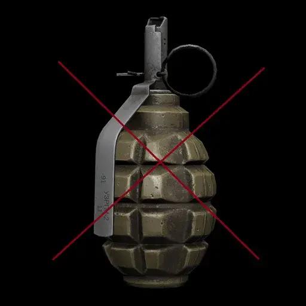
Addon
...Just no grenades on bots? It's pretty obvious. That's all this changes.
by acidphantasm
571 downloads
Addon
No teaser was available.
by Unknown author
0 downloads
Addon
No teaser was available.
by Unknown author
0 downloads
Addon
No teaser was available.
by Unknown author
0 downloads
Addon
Manually tuned configs for custom traders and quests so you can do pew-pew with suitable modded weapon
by hellchickens
321 downloads

Addon
☑️ 30 High quality MODULAR camo presets | Previews included!
by Bandoot
3,484 downloads
Addon
A collection of personal presets aimed for fun gunfights for varying levels of players
by CuriousVoidling
3,326 downloads
Addon
A preset mod that makes pmc's loadouts more live-like and reasonable.
by mip01
4,475 downloads
Addon
stickers that writing in arabic
by CMDR_Tank
539 downloads
Addon
EFT: Arena (ammo) in SPT? No way man.
by Baconism
32 downloads
Addon
Making your weapon a little more expressive.
by Azukata
4,219 downloads
Addon
Fika addon for Backdoor Bandit - NG
by kobethuy
2,196 downloads
Addon
This preset will cause some mild head/eyes.
by Baconism
180 downloads
AI disclosure

Addon
Adds Fika compatibility to Batteries Not Included
by ozen
606 downloads
Addon
Fika sync for Battle Ambience
by pein
637 downloads

Addon
Black Division spawn with notification
by ciallomako
5,660 downloads

Addon
Base camos and cut camos found in game files
by nkstuf
1,625 downloads
AI disclosure

Addon
Makes Blackout Fika compatible
by Vultify
265 downloads

Addon
Syncs boss notifications between host and clients in Fika multiplayer
by Dr3vik
1,787 downloads
AI disclosure
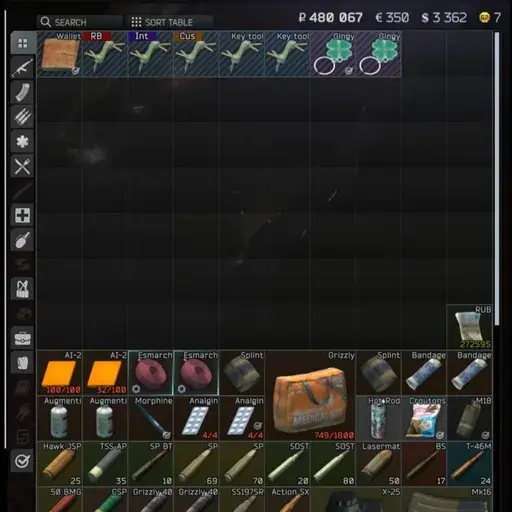
Addon
A custom config for sorting to the bottom.
by redlaser42
66 downloads
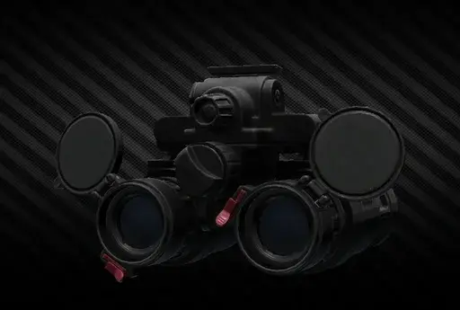
Addon
This addon will add support for WTT's black division PVS-31As to Borkel's Realistic Night Vision Goggles.
by Bullet_Casing
621 downloads
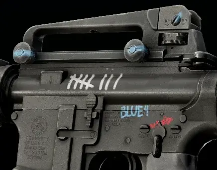
Addon
Hand-drawn markings for the high speed PMC!
by Clacker
1,404 downloads
Addon
Call Of Duty Quotes that shows up everytime you die.
by CMDR_Tank
105 downloads
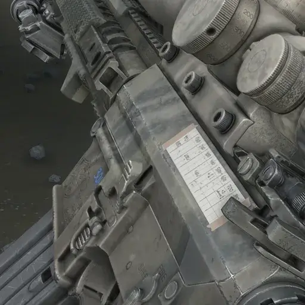
Addon
180+ Camouflages, Sharpie writings, armory markers, dust, modular camouflage layers
by bugs
6,187 downloads
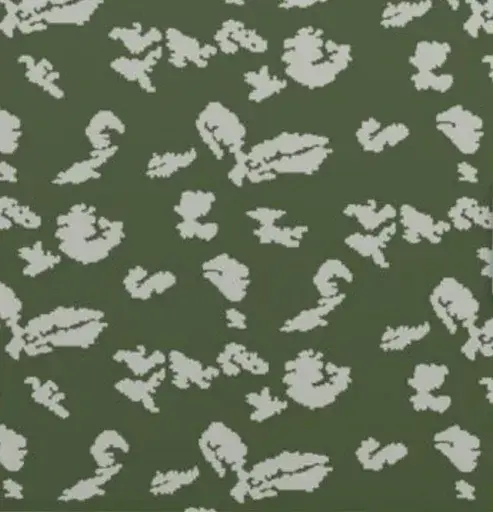
Addon
Adds 13 stickers based on nordic runes and symbols, 5 new masks and new camos
by WitchBlade
2,741 downloads
Addon
Fika Ladders
by tarkin
2,282 downloads
Addon
more camos for those MW2 fanboys like me
by papanoskill
2,698 downloads
AI disclosure

Addon
cs2 stickers
by BayouBill
701 downloads
Addon
You will die every time good luck
by xerofixx
222 downloads
Addon
Stickers of artworks made by War Thunder Artist, Daebom
by Doc Frek
1,572 downloads

Addon
Stickers based on the iconic 1v4 asymmetrical horror game
by Bandoot
791 downloads
Addon
Depleted uranium core rounds. Use with caution!
by TheAlexJ
58 downloads
Addon
My personal weapon skins bundled with extra stickers and build codes
by Doc Frek
265 downloads
Addon
Synchronize the doors changed by Door Randomizer
by ozen
663 downloads
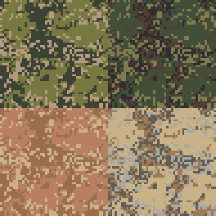
Addon
Adds EMR camouflage for Weapon Camo And Stickers mod
by FiveF
4,117 downloads
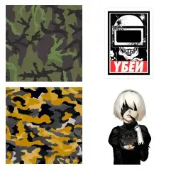
Addon
Basic collection of textures that can be used with Camo And Stickers
by 7Bpencil
12,361 downloads

Addon
Fika sync for FPV Drone Mod
by pein
2,176 downloads

Addon
Sticker from Girls Frontline series!
by Rein-K
1,660 downloads

Addon
Takes ALL ITEMS from base SPT and applies the DYNAMIC FLEA to them.
by pandize
146 downloads

Addon
Flea market got shut down and traders no longer treat you nice - what do you do?
by harmony
309 downloads
Addon
Adds a set of camouflages from the little-known game Big Silly Goose - Hired Ops. The set contains over 200 camouflages.
by Goodnigth
1,750 downloads
Addon
Embroidered Uniform Patches for Umbrella Corporation, SCP Foundation, EFT Cultist symbols(WIP) and more.
by Krieger01
96 downloads
AI disclosure
Addon
PMC's and Bosses should be scary.
by Shibdib
2,860 downloads
Addon
Перевод мода Lotus на русский язык
by Praxideke
447 downloads

Addon
Fika Sync addon for the icebreaker backport mod.
by Manimal1920
295 downloads
AI disclosure
Addon
For better management of added items.
by Massivesoft
743 downloads
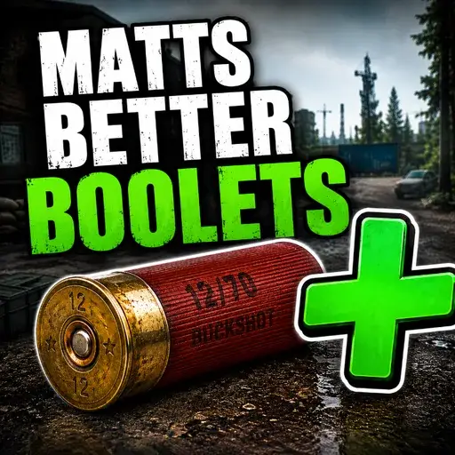
Addon
This is a simple add-on that adds new boolets and grenades, but keeps them balanced so there is no break in progression or difficulty. This now has restricted Arena Ammo. Another major feature of this Add-on has become a total rebalance of shotgun shells.
by newvegasmatt
183 downloads
AI disclosure

Addon
Adds Fika compatibility to merge consumables.
by Lacyway
1,830 downloads
Addon
Opens up the other small back room, and added a safe and a small loot zone on the floor
by shaneeexd
59 downloads
Addon
us military ranks
by CMDR_Tank
655 downloads

Addon
Fika compatibility addon for MiyakoCarryService.
by Himesamanoyume
295 downloads

Addon
This mod adds Mr. Kerman to the game. He acts as a merchant and quest giver. Help Mr. Kerman get to the bottom of the truth.
by TheAlexJ
224 downloads
Addon
Этот мод добавляет в игру Мистера Кермана. Он выступает в роли торговца и выдаёт задания. Помогите Мистеру Керману докопаться до истины.
by TheAlexJ
54 downloads
Addon
Opens up the NORVAIR store, with lots of loot potential.
by shaneeexd
74 downloads
Addon
Representation stickers to slap on your boomsticks.
by InstinctST
420 downloads
Addon
A tool that provides a GUI interface for viewing all attributes and their values for a category of items, offers certain statistical functions, and facilitates balance adjustments when creating new items.
by Suntion
36 downloads
AI disclosure

Addon
Turbo-charge your sales! A charming little SMTM add-on that shuffles inventory into buyers’ hands at worrying speed.
by swiftxp
14,560 downloads

Addon
Перевод мода RaidOverhaul на русский.
by siekat
13 downloads
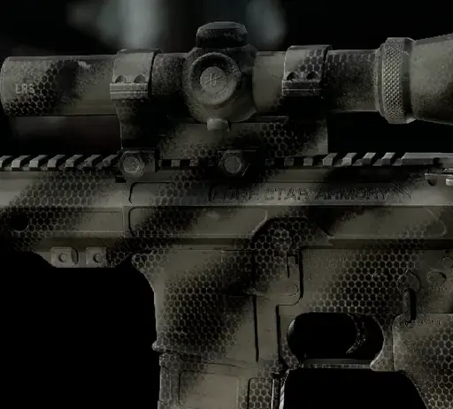
Addon
Rattle can paint jobs inspired by real world schemes.
by SligarTheTiger
1,407 downloads

Addon
Intends to add a practical use for unpopular items along with much more
by odanobunaga
8 downloads
Addon
Realistic Thermal Scopes - Less Pixelated
by FiveF
1,302 downloads
Addon
all Factions patch is here
by CMDR_Tank
1,525 downloads

Addon
Fika support for SamSWAT's Helicopter Crash Sites!
by Arys
2,687 downloads
Addon
Adds compatibility between Shared Weapon Builds & Hephaestus
by ArchangelWTF
37 downloads
Addon
Replace Prapor's model with Sidorovich
by tarkin
309 downloads
Addon
Replaces the UI sounds with SH2 inspired ones Remake/Original
by fxh3d
19 downloads

Addon
Stickers
by The_Kniper
2,710 downloads
Addon
For when people thought guns couldn't get any more cag.
by spiritsthroughyou
5,021 downloads
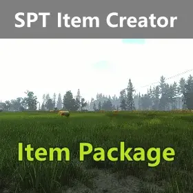
Addon
Some item data files suitable for the SPTItemCreator mod.
by Suntion
91 downloads

Addon
The accompanying Wiki systematically organizes data resources and offers complete API references and item creation guides, helping developers and players efficiently utilize the mod and rapidly expand SPT's item database.
by Suntion
247 downloads
Addon
T725-fix
by Massivesoft
444 downloads
Addon
Craft medical supplies in your hideout Medstation.
by viniHNS
61 downloads
Addon
Mechanic's former apprentice sells every Gunsmith contract weapon pre-assembled. No workbench, no parts hunting — unlocked through a four-quest storyline.
by PraetorianGuard
64 downloads
AI disclosure

Addon
Adds fika support to the transmog mod.
by Oriontacocat
519 downloads

Addon
Just dont let them know that you are AI.
by Vyckalino
3,787 downloads
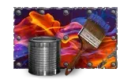
Addon
✔️ 515 New Textures | 🎭Themed Textures | 💎 Skins from other games Enjoy!!
by utanumaner
7,322 downloads
AI disclosure

Addon
Picture for core slot addon for Definitive Weapon Variants
by Szonszczyk
742 downloads
AI disclosure
Addon
Camo and Stickers from War Thunder
by Redmisty
1,734 downloads

Addon
WTT-Content Backport compatibility and variants addon for Definitive Weapon Variants
by Szonszczyk
2,705 downloads
No archived items match these filters.